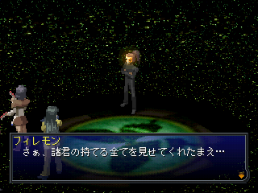

- EX던전이란?
- EX던전 공략
- EX시작 ~ 금나비 엠블렘 입수까지
- 흑나비 엠블럼 입수까지
- 학교 화재 ~ 흰나비 엠블럼 입수까지
- 최후의 대결전
EX던전이란?
EX던전은 이전에 플레이한 루트와 다른 루트로 클리어하면, EX던전이 개방된다. (세이브 데이터의 마크에 난조와 에리가 모두 표시)
따라서 통상 진행이라면, 3주차부터 EX던전에 갈 수 있게 된다.
| 데이터 인계 |
설명 |
| 본편→본편 |
타로 카드
페르소나/악마/합체 마법의 애널라이즈
판명된 식사의 효과
카르마 링(カルマリング)
시간성에 등록한 카드 |
| 본편→EX |
소지금
모든 아이템
모든 카드
페르소나/합체 마법의 애널라이즈
캐릭터의 스테이터스 |
| EX→EX |
소지금
모든 아이템
모든 카드
모든 애널라이즈
캐릭터의 스테이터스 |
| EX→본편 |
타로 카드
카르마 링
페르소나/악마/합체 마법의 애널라이즈 |
※ 본편과 EX의 악마 애널라이즈 데이터는 내용이 다릅니다. <EX→본편>의 경우 EX의 악마 애널라이즈 데이터가 본편용으로 변환됩니다.
EX던전 공략
게임 타이틀 화면에서 'EXTRA DUNGEON'을 선택하고, 2주차 클리어 데이터를 불러오면 EX던전을 시작할 수 있다.
EX던전의 특징
- EX던전은 칠자매 학원(七姉妹学園)에서 진행된다.
- 거리로는 나갈 수 없으며, 필요한 아이템은 트릿슈의 샘에서 팔고 있다.
- 본편의 악마 애널라이즈 데이터를 제외한, 모든 요소를 계승하여 시작한다.
- 벨벳룸에서 난조/에리를 파티에 영입할 수 있다. (본편의 이탈 시점 스테이터스)
- EX던전 클리어 타임으로 E~S까지 평가가 나온다.
- 재차, EX던전을 시작하면, 이전 클리어시의 평가에 의해서 숨겨진 메시지를 볼 수 있다.
클리어 평가
| 랭크 |
조건 |
| S |
8시간 이하로 클리어 & '나비의 엠블럼'을 모두 입수 |
| A |
8시간 이하로 클리어 & '나비의 엠블럼'을 2개 입수 |
| B |
10시간 이하로 클리어 & '나비의 엠블럼'을 1개 입수 |
| C |
12시간 이하로 클리어 |
| D |
14시간 이하로 클리어 |
| E |
14시간 이상으로 클리어 |
공략 루트 순서 : 1A→1D→2A→1A→1B→2C→2B→1C→3C→3B→3A→4F
EX시작 ~ 금나비 엠블렘 입수까지
학원 복도에서는 적이 출현하지 않으며, 1F와 3F에 벨벳룸과 트릿슈의 샘이 있다.
또한, 벨벳룸에서 파티 편성이 가능하다.
우선 1F 서쪽에 있는 <1-A>에 들어가자.
흐르는 유사로 약간의 퍼즐이 있는 던전이다.
처음 들어간 시점에서는 열리지 않는 문이 있는데 일단 기억해둔다.
B1 북동쪽 계단으로 B2에 내려간 후 북쪽에 있는 빛의 소용돌이(光の渦)에 접근하면 클리어할 수 있다.
이후 <1-D>에 들어간다.
<1-D>는 강제로 전진하는 던전인데, L/R의 방향 전환으로 진행될 방향을 바꾸면서 빛의 소용돌이에 도착해야 한다.
3분 이내에 클리어하지 못 하면
게임 오버가 된다. 게다가 바닥에는 스타트 지점으로 돌아가는 함정도 있다.
다행히 적은 출현하지 않지만, 로드를 반복해서 코스를 기억하지 않으면 클리어하기 어렵다.
클리어하면, 2F에 갈 수 있게 된다. <2-A>에 들어가자.
<2-A>에서는 이동 중 적은 출현하지 않지만, 필레몬의 나비를 조사하면 강력한 고정 적이 출현하여 전투를 하게 된다.
이 던전은 레스트 룸(レストルーム)이라고 표시된 장소 이외에는 회복을 할 수 없기 때문에 싸우기 불편하다.
B4에서 에리 전용 페르소나를 소환하기 위한 마테리얼 카드가 들어있는 보상이 있으므로 반드시 입수해두자.
B5의 빛의 소용돌이에 접근하면 클리어. 이전 <1-A>에서 열리지 않았던 문이 열린다.
다시 <1-A>에 들어간다. 우선 전에 열리지 않았던 봉인의 문(封印の門)으로 들어가자. (1F 북동쪽 끝 계단으로..)
특정 지점을 지나면 기둥이 상하로 움직이는 1F와 유사가 흐르는 2F로 나누어져 있다.
맵의 위쪽이 북쪽인 것을 기준으로 해서 1F 중앙의 십자로를 오른쪽으로 나아가 계단을 올라간다.
2F에서는 옆이나 아래로 흐르는 유사를 타지 않도록 진행하여, 위로 흐르는 유사를 타면 골에 갈 수 있다.
B2의 빛의 소용돌이에 접근하면 클리어! 이후 <1-B>로 간다.
<1-B>는 통상 아무 장치도 없고, 적도 나오지 않는 오솔길 던전.
최심부의 보상에서 "금나비 엠블럼(金の蝶のエンブレム)"을 입수할 수 있다. 동시에 인카운트율이 대폭 증가!
이때 LV.78 이상이라면 '에스트마'를 사용하여 적 출현을 억제할 수 있다.
흑나비 엠블럼 입수까지
<2-C>에 들어가면, 기억이 사라진 스도우 타츠야(須藤竜也)를 만날 수 있다.
기억을 소생시키기 위해 안으로 들어가서 던전을 탐색하자. 여기서는 3개의 아이템을 찾아야 한다.
던전 구조는 복잡하지만, 오토맵을 채우다 보면 자연스레 해결되므로 설명은 없다!
인라케치(インラケチ), 검은 지포라이터(黒いジッポライター), 나이프(ナイフ)
3개의 아이템을 모두 모으고, 스도우 타츠야에게 보여주면 클리어할 수 있다.
또한, 던전내에서 난조 전용 페르소나를 소환하기 위한 마테리얼 카드와,
"흑나비 엠블럼(黒の蝶のエンブレム)"이 있는 보상을 반드시 열어보는 것을 잊지 말자.
학교 화재 ~ 흰나비 엠블럼 입수까지
40분의 제한 시간내에 "수수께기의 문(謎の扉)"에 들어가지 않으면 게임 오버.
<세이브/트릿슈의 샘/벨벳룸> 모두 이용할 수 없다.
- <2-B> : 제어 패널(制御パネル)로 벨테 컨베이어의 진행 방향을 바꿔 빛의 소용돌이에 접근하면 클리어, 1-C 앞의 불길이 사라진다.
- <1-C> : 5개의 지장(地蔵)을 조사하과, 수수께끼의 문의 패스워드 힌트를 모은다.
이후 수수께끼의 문의 패스워드를 입력하고 안을 들어간다. (정답을 알고 있으면 2-B와 1-C는 무시해도 무관)
정답은 필레몬(フィレモン)이다.
벨벳룸에서 이고르와 회화하고 3F으로 간다.
이후 1F, 2F로 돌아올 수 없으며, 3F의 벨벳룸에 진입할 수 없다.
다행히 3-A에서 트릿슈의 샘을 이용할 수 있다. 다음 진행으로 <3-C>에 들어가자.
<3-C>는 유성문(流星門)의 퀴즈를 맞추면 안으로 들어갈 수 있다.
던전에 있는 5매의 기억의 석판(記憶の石板)을 조사해서, 유성문(流星門)의 퀴즈 힌트를 알아낸다. (정답을 알고 있으면 조사할 필요는 없다.)
정답 : 31, ミズノ, カニカン, ムッシー, 7
5번째 유성문 퀴즈를 풀고 안으로 들어가 빛의 소용돌이에 들어가면 클리어할 수 있다.
3F 중앙 계단 앞에 있는 '고교생 카츠야'와 대화를 한다.
이후 <3-D> 동쪽 문을 여러 번 조사하면, 내부에 있는 사람과 대화를 할 수 있다. (동시에 벨벳룸 출입이 가능해짐)
다시 <3-C>에 들어간다. 여기서는 잭 랜턴(ジャックランタン)과 잭 프로스트(ジャックフロスト)와 계약할 필요가 있다.
- 잭 랜턴 계약 컨택트 : <마야→우라라>
- 잭 프로스트 계약 컨택트 : <마야→카츠야>
※ 잭 프로스트는 제1유성문 ~ 워프 사이에서 자주 출현한다.
잭 랜턴과 계약해서, 잭 프로스트를 언급하는 정보를 듣는다.
이후 잭 프로스트와 계약하고, "불을 꺼줬으면 좋겠다.(火を消してほしい)"를 4회 부탁한다.
2번째 부탁 이후, 잭 프로스트에게 부탁하려면 조건이 있다.
- 2번째는 퀴즈 :
め, すべて, 蚊, お星さま, あくび
- 3번째는 파티 전원을 여성으로 (우라라→에리)
- 4번째는 잭 프로스트가 마음에 드는 선택사항을 선택 :
わからない, 嫌い, 用件
4회 부탁을 완료했으면, <3-D> 동쪽의 문 내부에 있는 잭 프로스트와 대화하고, <3-B> 앞의 불을 끈다.
이후 <3-B>를 통해 과거의 칠자매 학원과 왕래할 수 있게 된다.
과거 학원의 3F 중앙 계단 앞에 있는 이데알 선생(イデアル先生)과 대화하고, 소지금 전부를 투자한다.
이후 과거 학원의 <3-A>에 들어간다.
과거 <3-A>는 맵에 있는 4개의 문을 지날 때마다 동료 1명씩 두고 갈 필요가 있다.
출현 악마의 최대 레벨이 무려 '99'! 게다가 입수 경험치도 6만 ~ 12만까지 엄청 많이준다. 나중에 다시 올 수 있으니 일단 던전을 진행하자.
각 구역의 보상에 있는
천정대판(天正大判)을 1개씩 총5개를 입수하여, 마지막 문까지 도착해야 한다.
마지막 문에 마야 혼자서 강제 전투가 있다.
| 명칭 |
요그 소토스 |
| HP |
1999 |
| 상성 |
물리 무효/지변 흡수/질풍 약점 |
| 사용 스킬 |
아스테로이드 봄, 광자포, 혼탁의 장기 |
격파하고, 안에 있는 보상을 열면 마지막 나비! "흰나비 엠블럼(白い蝶のエンブレム)"을 입수할 수 있다.
과거 <3-A>는 아자젤(アザゼル)이 출현한다. 특수 페르소나 토크로 마테리얼 카드를 입수할 수 있으니 항목을 참조하길 바람.
- 칠자매 학원 3F 트릿슈의 샘에서 '천정대판'을 모두 처분하고 500만의 자금을 입수한다.
- 과거의 칠자매 학원의 이데알 선생에게 500만엔을 지불한다.
- 현재(?)의 칠자매 학원으로 돌아와 3F 중앙으로 가면 4F로 가는 계단이 열린다.
- 올라가서 문을 열면 BOSS : 필레몬과 하르마게돈!
글쓴이가 여기까지 걸린 시간은 딱 3시간 30분!...빠르면 2시간 정도도 가능할 듯
최후의 대결전

아아...드디어 제일 나쁜 방관자놈을 처리할 수 있습니다. 바로 필레몬(フィレモン)이지요.
마지막이라고 음성까지 나옵니다. (쓰읍...)
필레몬이 사용하는 스킬
| 스킬명 |
상성 |
범위 |
위력 |
효과 |
| 光子砲 |
전투 기술 |
적 전체 |
48 |
데미지 |
| 永遠の白 |
신성 |
적 전체 |
204 |
HP를 흡수 |
| ガードパニッシュ |
만능 |
적 전체 |
150 |
데미지
'방어' 상태의 상대에게 통상의 2배 데미지 |
| スペクトラフォース |
- |
적 전체 |
250 |
데미지
<화염/수격/질풍/지변/빙결/전격/핵열/만능>의 랜덤 상성 |
| 泡沫の波紋 |
무시 |
적 전체 |
- |
아래의 마법 효과를 모두 해제한다.
1. 카쟈계
2. 테트라칸(テトラカーン), 마카라칸(マカラカーン)
3. 디아마이(ディアマイ), 메디아마이(メディアマイ) |
| ハルマゲドン・R |
무시 |
적 전체 |
- |
빈사(200％)
하르마게돈(ハルマゲドン)에 대한 반격으로 사용 |
필레몬의 HP는 '30000'입니다. 본편의 라스트보스 1차/2차 형태의 HP를 합친 값보다 약간 높지요.
게다가 레벨 100인 만큼 강합니다. 다만, 극악 패턴은 없으니 P3의 '엘리자베스'와 비교하면 엄청나게 쉬운 상대입니다. (사실 너무 쉬움;)
필레몬에게 데미지를 준 만큼 HP를 회복하는 마법이나, 상성이 변화하는 마법을 사용합니다.(평타는 거의 안때립니다.) 따라서 '마카라칸'이나 '마법 반사' 내성을 가진 페르소나가 있으면 매우 편합니다.
필레몬은 무효 상성이 없으니, 대부분의 공격이 유효합니다. 다만, 상태 이상이나 즉사계는 안통하겠지요.
이 전투에서 최강의 합체 스킬 : 하르마게돈(ハルマゲドン)을 사용하면 그 유명한 반사 이벤트가 나옵니다...자살 행위나 다름없으니 사용하지 마세요.
○○카자, ○○라칸 등 스킬도 해제합니다. 사용 빈도는 낮으니 안심하고 사용하세요.
'신성'계 무효가 있으면, HP 흡수도 차단할 수 있으니 필레몬의 HP회복을 막을 수 있습니다. (필수!)
만일 격파가 불가능하다고 판단되면, 본편의 세이브 데이터를 다시 불러와서 캐릭터를 육성합시다.
- 'ALL 인센스'를 사용해서 전 캐릭터 능력치가 99인 상태
- 무기와 방어구도 최고급으로 준비 (특히 방어구는 마법 방어력이 증가하는 것으로)
상기 2개를 만족하면, EX던전을 진행합니다. 캐릭터의 레벨업은 EX던전에서 하는 것이 경험치가 많아서 더 쉽습니다.
사용하는 페르소나는 '마법 반사'가 있는 것이 좋습니다. 이 경우 대부분 '물리 약점'을 가지고 있는데, '테트라칸'으로 극복할 수 있습니다. 필레몬의 스킬 중에는 무시 속성이 없으니 모든 공격(물리/마법)을 반사하는 상황이 나옵니다. 다만, 타이밍이 잘 맞아야 '테트라칸'을 걸칠 시간이 나오겠지요.
반사 작전으로 갈 것인지, 강한 캐릭터로 밀어붙일 것인지는 플레이어가 판단하세요.